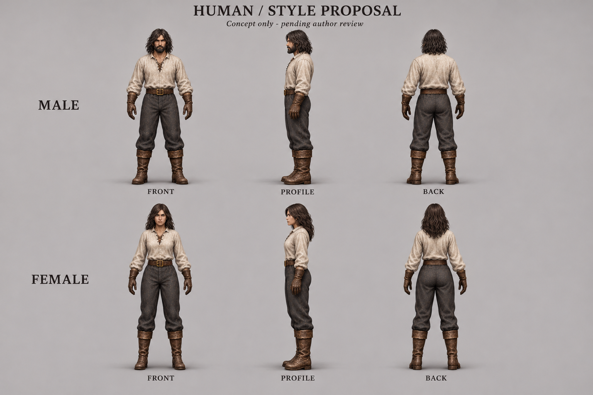
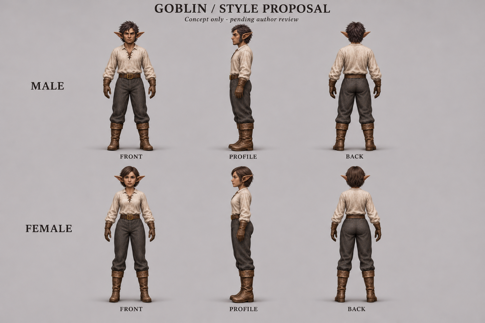
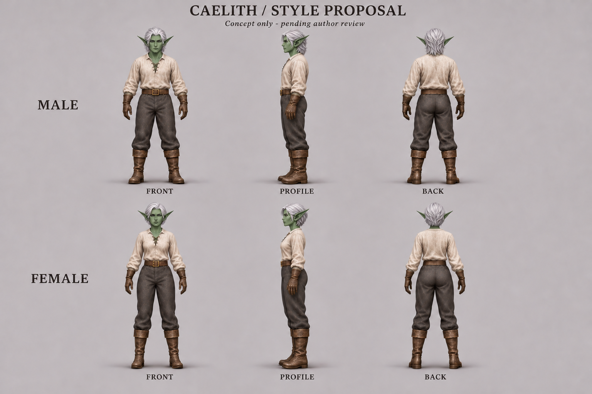
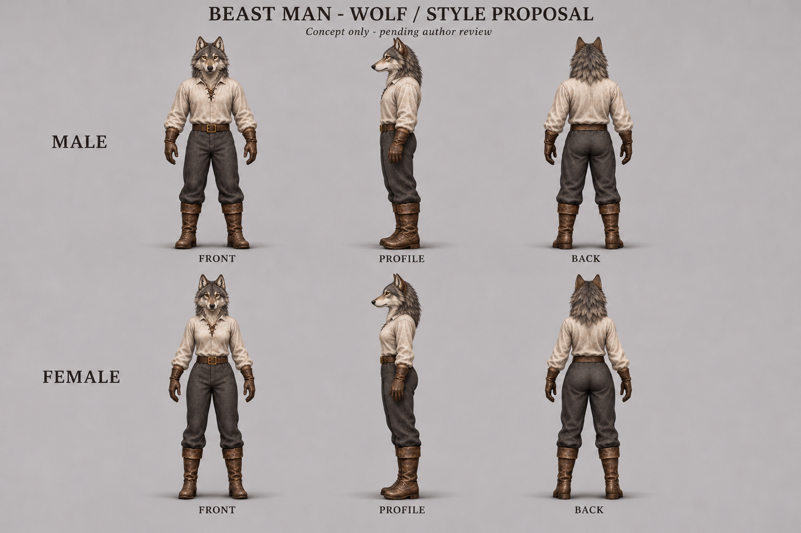
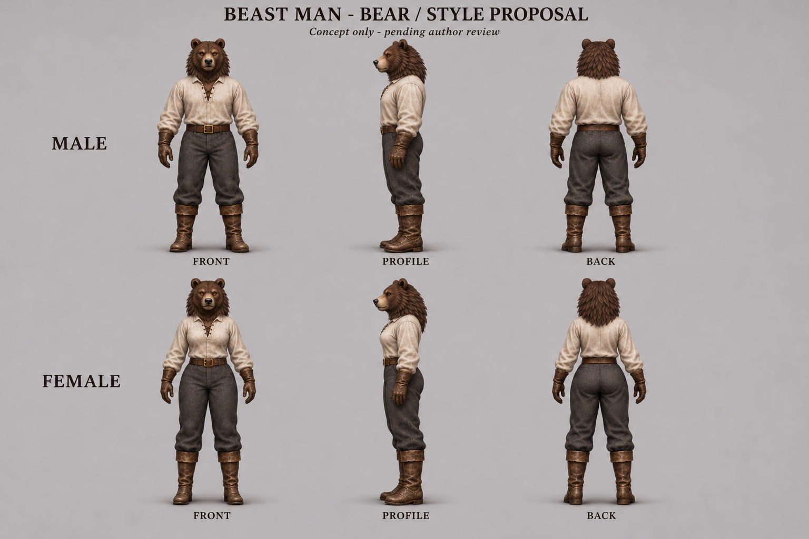
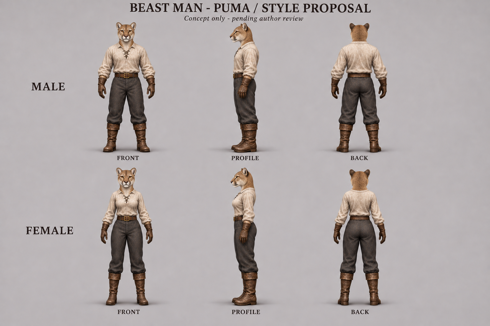
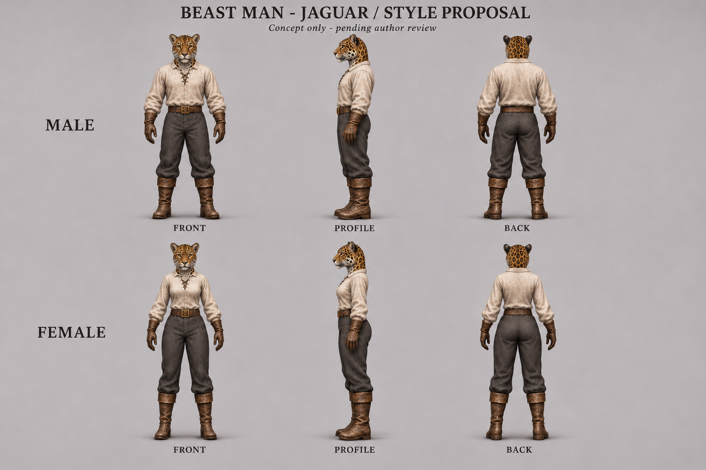

Body
Race/sex anatomy and shared animation landmarks; clothing must not be baked into the body. Covered anatomy is not validated by these images.
Seven families, fourteen adult variants. Review the overall proportions, species identity, neutral clothing and material treatment before broad modular conversion.
These are generated concept boards. They are not exported 3D models, native captures or proof of modular assembly.
Grounded adult proportions and plain garments. Male facial hair and female shoulder-length hair are examples only; the four faces and four hairstyles per sex remain separate work.

Natural tan skin and pointed ears preserve the owned references. Review whether the body silhouette and ear-to-head proportions distinguish this family enough from humans.

Green skin with white hair is one example of independent skin/hair choices. Version 1 shortened the ears; version 2 restores the longer pointed silhouette. Skin RGB and all six hair colors remain required.

Gray/brown/cream fur and a full animal muzzle. Review the neck ruff and transition into the collar, head scale and male/female body distinction.

Brown fur, round ears and a broad animal muzzle. The clothed body remains close to the common humanoid base; review whether the shoulder/torso mass is sufficient for the intended bear form.

Unspotted tawny coat and a feline muzzle, using the corrected puma_head_v2 reference. Review head scale, muzzle depth and collar transition.

Golden coat, dark rosettes and a broad feline muzzle. Review jaguar identity, head scale and whether rosettes remain readable at gameplay distance.

The existing #148/#458 requirements stay in force. The following is a construction contract, not an exploded view of completed geometry.
Race/sex anatomy and shared animation landmarks; clothing must not be baked into the body. Covered anatomy is not validated by these images.
Separate head with a clean neck join. Four distinct faces per humanoid sex remain required; beast heads retain their animal identity.
Separate interchangeable scalp/hair modules. Four styles and six colors per humanoid sex remain required. Animal fur does not become a human hairstyle.
Independent skin/fur hands and equipment attachment. Gloves in these boards conceal fingers; exposed hands still need actual model review.
Shirt, trousers, belt, gloves and boots are separate garments with compatible attachments and coverage. These boards do not demonstrate interchangeable meshes.
Weapons, shields and armor attach independently and must fit the approved bodies. No outfit Cartesian-product meshes; no new equipment is granted by appearance.